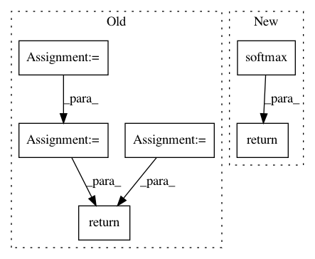

74796ff02e9425ca336f595978fe6e7c422c0378,tensorlayer/activation.py,,pixel_wise_softmax,#Any#Any#,80
Before Change
- `tf.reverse <https://www.tensorflow.org/versions/master/api_docs/python/array_ops.html//reverse>`_
with tf.name_scope(name) as scope:
exp_map = tf.exp(output)
if output.get_shape().ndims == 4: // 2d image
evidence = tf.add(exp_map, tf.reverse(exp_map, [False, False, False, True]))
elif output.get_shape().ndims == 5: // 3d image
evidence = tf.add(exp_map, tf.reverse(exp_map, [False, False, False, False, True]))
else:
raise Exception("output parameters should be 2d or 3d image, not %s" % str(output._shape))
return tf.div(exp_map, evidence)
After Change
- `tf.reverse <https://www.tensorflow.org/versions/master/api_docs/python/array_ops.html//reverse>`_
with tf.name_scope(name) as scope:
return tf.nn.softmax(output)
//// old implementation
// exp_map = tf.exp(output)
// if output.get_shape().ndims == 4: // 2d image
// evidence = tf.add(exp_map, tf.reverse(exp_map, [False, False, False, True]))
In pattern: SUPERPATTERN
Frequency: 4
Non-data size: 6
Instances
Project Name: zsdonghao/text-to-image
Commit Name: 74796ff02e9425ca336f595978fe6e7c422c0378
Time: 2017-04-11
Author: dhsig552@163.com
File Name: tensorlayer/activation.py
Class Name:
Method Name: pixel_wise_softmax
Project Name: tensorlayer/tensorlayer
Commit Name: 4c02d6d4da5ba31d7c9e6e11e6415e8bd2fa2962
Time: 2016-11-21
Author: dhsig552@163.com
File Name: tensorlayer/activation.py
Class Name:
Method Name: pixel_wise_softmax
Project Name: rusty1s/pytorch_geometric
Commit Name: 2dd4aa0abf65eb0793e007dacba8a32555a73345
Time: 2019-07-16
Author: matthias.fey@tu-dortmund.de
File Name: torch_geometric/nn/pool/edge_pool.py
Class Name: EdgePooling
Method Name: compute_edge_score_softmax
Project Name: interactiveaudiolab/nussl
Commit Name: 0c529108875e37dc67276ee6247f0703da9c28db
Time: 2019-04-25
Author: prem@u.northwestern.edu
File Name: nussl/separation/clustering/clusterers.py
Class Name: KMeansConfidence
Method Name: confidence